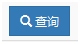
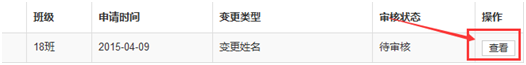
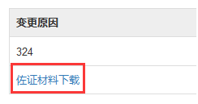

关键信息变更审核
功能描述
区县审核本区内提交的关键信息变更申请，审核通过的系统将修改学生的关键信息，审核不通过的系统保留该申请记录，不修改学生关键信息。
操作步骤
第一步，学籍信息管理->关键信息变更审核。
第二步，选择学校、校区、年级、班级等筛选条件信息。默认为全部展示状态。

第三步，点击“查询”，系统将自动为您检索符合条件的信息。
第四步，选择学生，点击“查看”。
第五步，审核提交的变更信息，点击“佐证材料下载”查看佐证材料。
第六步，执行审核。
- 点击“审核不通过”或“审核通过”。
- 您也可在查看所有学生的提交的信息后，批量对所有学生进行审核通过的操作。
第七步，审核完成。